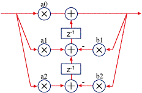
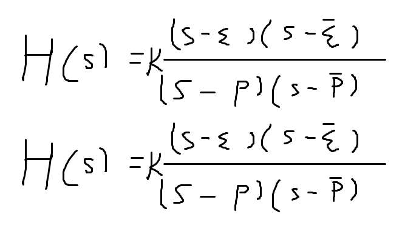
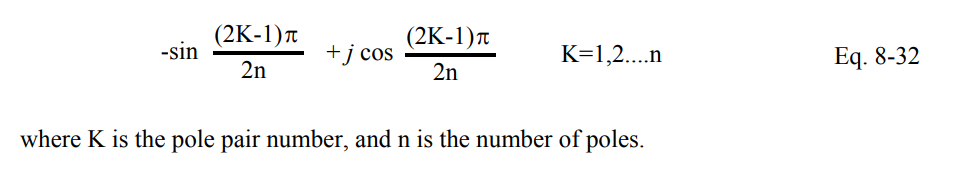
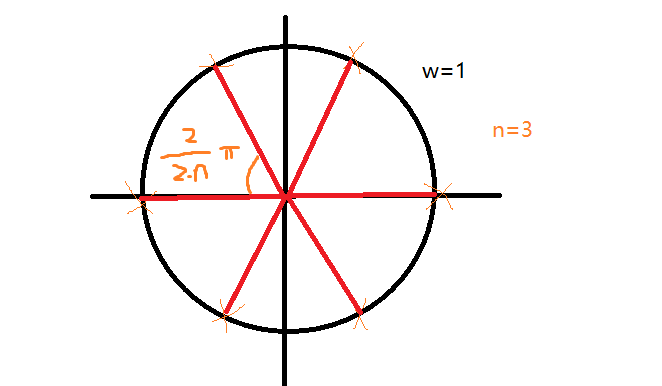
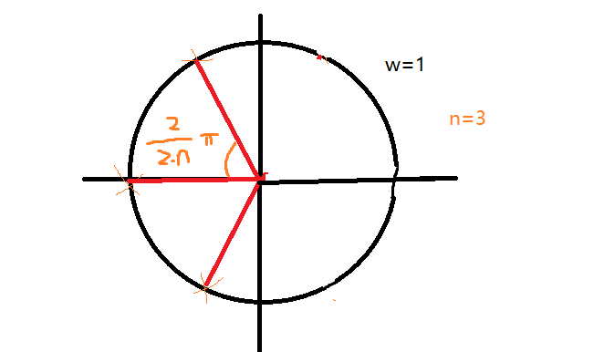
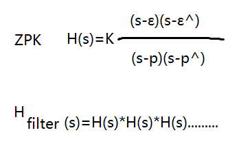
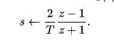

back
滤波器设计学习
双二阶滤波器(Biquad)
高阶的直接传递函数型设计的滤波器很容易受到精度影响，这会导致极点和零点漂移，甚至跑到单位圆外面导致不稳定，以及超高的量化噪声。
级联形式的双二阶滤波器受到的影响较低，然而在极低频下也会受到精度影响出现上述情况，这不影响它仍然是最流行的滤波器。
![https://cn.bing.com/images/search?view=detailV2&ccid=IpGI3MBp&id=A18CF3082EFEC32870548D441CFC0379ED4A055C&thid=OIP.IpGI3MBpeMF84wLyPzz9PwHaEC&mediaurl=https%3A%2F%2Fts1.tc.mm.bing.net%2Fth%2Fid%2FR-C.229188dcc06978c17ce302f23f3cfd3f%3Frik%3DXAVK7XkD%252fBxEjQ%26riu%3Dhttp%253a%252f%252fwww.minidsp.com%252fimages%252fstories%252fapplications%252fbiquad.jpg%26ehk%3DIPZqMGi6UVBIRfMFVr5yFLiq6WQwxWDYucOcsUDWYwM%253d%26risl%3D%26pid%3DImgRaw%26r%3D0&exph=341&expw=626&q=biquad&simid=607988394707994238&FORM=IRPRST&ck=9B234C5368668FDD716EB1B0C1F2D949&selectedIndex=1&itb=0&cw=1296&ch=665&ajaxhist=0&ajaxserp=0](biquad.webp)
I 型Biuqad滤波器
I 型Biqad滤波器适合定点任务，因为其中只有一个累加器。
对于浮点数而言，转置II型是最好的选择

转置II型biquad滤波器
一个biquad滤波器可以表示一对共轭零点和一对共轭极点，在接下来的计算中我都会忽略类型中的共轭复数。
从传递函数的ZPK表示开始，Z=零点，P=极点，K=增益。
struct ZPK {
double k;
std::optional>> z; // 如果Null则在无穷远处
std::complex p;
std::complex GetAnalogResponce(double omega) const {
auto s = std::complex{0.0, omega};
if (z) {
auto up = (s - *z) * (s - std::conj(*z));
auto down = (s - p) * (s - std::conj(p));
return up * k / down;
}
else {
auto up = k;
auto down = (s - p) * (s - std::conj(p));
return up / down;
}
}
};

如上图所示，p^是指p的共轭复数，ε^s是指ε的共轭复数。它们描述了连续滤波器传递函数中的零点和极点。在代码中，分子为1时零点将记作std::nullopt。
原型巴特沃斯
Analog Filter Chapter8
原型巴特沃斯滤波器是纯极点滤波器，其极点分布在单位圆上(w=1)

一个更清晰明了的分布如下图所示

巴特沃斯的极点分布
右半平面的极点是不需要的，它们会导致滤波器不稳定（瞬态响应无限放大），去除之后的极点图如下所示

通过这里的公式可以编写以下代码求解极点，注意，省略了另一个共轭极点。
std::vector Butterworth(int num_filter) {
std::vector ret{static_cast(num_filter)};
int n = 2 * num_filter;
int i = 0;
for (int k = 1; k <= num_filter; ++k) {
double phi = (2.0 * k - 1.0) * pi / (2.0 * n);
ret[i].k = 1.0;
ret[i].p = std::complex{-std::sin(phi), std::cos(phi)};
++i;
}
return ret;
}
一个biquad有着一对共轭极点，所以n = 2 * num_filter，由于没有零点，zpk::p默认初始化为nullopt。
使用以上的zpk，我们将得到一个|H(1j)| = -3dB的低通滤波器。
双线性映射
wikipedia
好吧，我们先暂时跳过其他滤波器和连续滤波器映射，先来验证我们的代码。
首先，我使用的是ZPK形式的传递函数，基本上它可以写成这样表示

传递函数由许多单个ZPK相乘，对应滤波器的级联
注意 我不会讨论有关任何底层原理，如有需要请自己观看引用参考。
为了从连续传递函数H(s)获取离散传递函数H(z)，我使用双线性变换进行离散化。

双线性变换由s到z
通过将上述变换代入H(s)，上述式子将会代替原有ZPK中的所有s,从而得到一个由z组成的ZPK传递函数
\[H(s)=\frac{(s-\epsilon)(s-\bar{\epsilon})}{(s-p)(s-\bar{p})}*K_{f}\]
\begin{equation}\begin{aligned} H(z)&=\frac{(k\frac{z-1}{z+1}-\epsilon)(k\frac{z-1}{z+1}-\bar{\epsilon})}{(k\frac{z-1}{z+1}-p)(k\frac{z-1}{z+1}-\bar{p})}*K_{f} \\&= \boxed{\frac{(z-\frac{k+\epsilon}{k-\epsilon})(z-\frac{k+\bar{\epsilon}}{k-\bar{\epsilon}})}{(z-\frac{k+p}{k-p})(z-\frac{k+\bar{p}}{k-\bar{p}})}} * \boxed{\frac{(k-\epsilon)(k-\bar{\epsilon})}{(k-p)(k-\bar{p})}*K_{f}} \end{aligned}\end{equation}
\[H(s)=\frac{1}{(s-p)(s-\bar{p})}*K_{f}\]
\begin{equation}\begin{aligned} H(z)&=\frac{1}{(k\frac{z-1}{z+1}-p)(k\frac{z-1}{z+1}-\bar{p})}*K_{f} \\&= \boxed{\frac{(z+1)(z+1)}{(z-\frac{k+p}{k-p})(z-\frac{k+\bar{p}}{k-\bar{p}})}} * \boxed{\frac{K_{f}}{(k-p)(k-\bar{p})}} \end{aligned}\end{equation}
如上公式所示，前面的部分为零点和极点，后面的部分为增益，不加证明，新的到的零点和极点也是共轭的，因此我们只保留一个，从而写出以下代码
std::vector Bilinear(const std::vector& analog, double fs) {
std::vector ret{analog.size()};
std::complex k = 2.0 * fs;
int num_filter = static_cast(analog.size());
for (int i = 0; i < num_filter; ++i) {
const ZPK& s = analog[i];
ZPK& z = ret[i];
if (s.z) {
z.p = (k + s.p) / (k - s.p);
z.z = (k + *s.z) / (k - *s.z);
z.k = s.k * std::real((k - *s.z) * (k - std::conj(*s.z)) / (k - s.p) / (k - std::conj(s.p)));
}
else {
z.p = (k + s.p) / (k - s.p);
z.z = -1;
z.k = s.k / std::real((k - s.p) * (k - std::conj(s.p)));
}
}
return ret;
}
离散ZPF到biquad
好的，我们已经完成了离散化这一步并得到了离散的ZPK，接下来需要将ZPK转换为biquad
\[ H(z)=\frac{b_{0}z^{2}+b_{1}z^{1}+b_{2}z}{z^{2}+a_{1}z+a_{2}} \]
一个biquad传递函数
struct Biquad {
double a1;
double a2;
double b0;
double b1;
double b2;
std::complex GetResponce(double omega) const {
auto z = std::polar(1.0, omega);
auto up = b0 * z * z + b1 * z + b2;
auto down = z * z + a1 * z + a2;
return up / down;
}
};
一个简单biquad结构体
\begin{equation}\begin{aligned} H(z)&=\frac{(z-\epsilon)(z-\bar{\epsilon})}{(z-p)(z-\bar{p})}*K_{f} \\ &=\frac{K_{f}z^{2}-2Re\{\epsilon\}K_{f}z+\epsilon\bar{\epsilon}K_{f}}{z^{2}-2Re\{p\}+p\bar{p}} \end{aligned}\end{equation}
一个离散ZPK
根据上述两个公式，很容易就能推导出biquad中各个参数的计算，因此我们可以写下以下代码
std::vector TfToBiquad(const std::vector& digital) {
std::vector ret{digital.size()};
size_t num_filter = digital.size();
for (size_t i = 0; i < num_filter; ++i) {
const auto& z = digital[i];
auto& biquad = ret[i];
biquad.b0 = z.k;
biquad.b1 = -z.k * 2.0 * std::real(*z.z);
biquad.b2 = z.k * std::norm(*z.z);
biquad.a1 = -2.0 * std::real(z.p);
biquad.a2 = std::norm(z.p);
}
return ret;
}
切比雪夫I型
切比雪夫II型
连续滤波器映射
原型到低通
原型到高通
原型到带通
原型到带阻